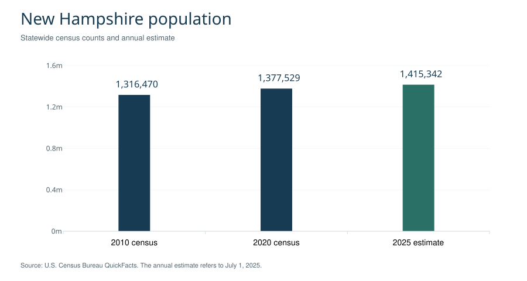
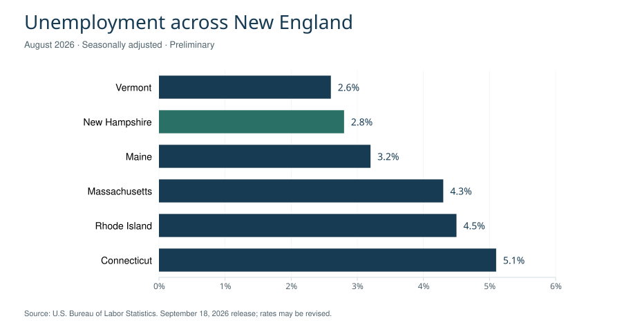
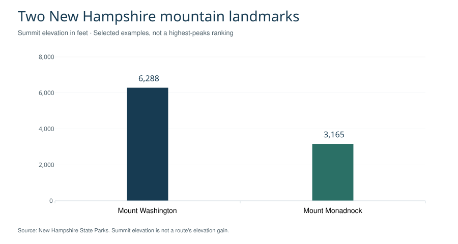

New Hampshire is a U.S. state in New England, known as the Granite State. It reaches from the Atlantic Seacoast to the White Mountains and the Canadian border. Concord is its capital; Manchester is its largest city. New Hampshire became the ninth state on June 21, 1788. Its motto, “Live Free or Die,” is associated with Revolutionary War general John Stark. [1] [20]
The state combines industrial river cities, university communities, lakeside towns and extensive mountain landscapes. This reference explains how those places fit together, with sections on population, regions, history, government, business, education and travel. The statistics identify their observation periods, while the regional guide separates tourism geography from county boundaries.
Contents 13 sections
- New Hampshire population and state profile
- Geography: White Mountains, rivers and lakes
- The seven regions of New Hampshire
- Cities and communities: Concord to Portsmouth
- History of New Hampshire
- Government, counties and the presidential primary
- Economy, employment and tourism
- Major businesses and institutions
- Education, culture and state identity
- State parks and outdoor recreation
- Climate and seasons
- Transportation: airports, rail and roads
- Sources and notes
New Hampshire population and state profile
New Hampshire had an estimated 1,415,342 residents on July 1, 2025. Census counts and annual estimates are different statistical products; the chart labels each explicitly. [2]
| Indicator | New Hampshire | Period |
|---|---|---|
| Population | 1,316,470 | 2010 census |
| Population | 1,377,529 | 2020 census |
| Population estimate | 1,415,342 | July 2025 |
| Land area | 8,953.75 sq mi | 2020 geography |
| Population density | 153.9 per sq mi | 2020 |
| Households | 555,822 | 2020–2024 |
| Median household income | $99,031 | 2020–2024; 2024 dollars |
| Median owner-occupied home value | $402,500 | 2020–2024 |
| Median monthly gross rent | $1,491 | 2020–2024 |
| Owner-occupied share of occupied housing | 72.8% | 2020–2024 |
| Bachelor's degree or higher, age 25+ | 40.6% | 2020–2024 |
| Households with broadband | 92.9% | 2020–2024 |
Source: U.S. Census Bureau QuickFacts. The five-year household measures describe a period, rather than a single year's transactions. [2]

These statewide figures provide context, not a description of every community. A household income statistic does not measure an individual's salary, and a median home value is not a current asking price. Comparing two towns requires equivalent boundaries, dates and definitions. For a relocation decision, local housing, school and transport information should accompany the statewide profile.
Geography: White Mountains, rivers and lakes
New Hampshire borders Quebec to the north, Maine to the east, Massachusetts to the south and Vermont to the west, with an Atlantic coastal frontage in the southeast. The Connecticut River is central to its western geography; the Merrimack River links Concord and Manchester within the state's southern urban corridor. The mountainous north and the more urbanized south give the state markedly different local landscapes. [1] [4]
White Mountains and Mount Washington
The White Mountains are a mountain region; White Mountain National Forest is a federally managed area that crosses into western Maine. These names are related but are not interchangeable. The Forest Service describes a forest of almost 800,000 acres, established in 1918 following the land-conservation framework of the Weeks Act of 1911. That approximate acreage refers to the two-state forest, not solely to New Hampshire. [6]
Mount Washington rises to 6,288 feet. Mount Washington State Park occupies 58.8 acres at the summit. The mountain, the summit park and the wider national forest have different boundaries and responsibilities. When planning a visit, use the responsible operator or land manager for current access, services and weather information. A valley forecast is not an adequate description of summit conditions. [5]
Lake Winnipesaukee and the Lakes Region
Lake Winnipesaukee, New Hampshire's largest lake, anchors the Lakes Region. Visit New Hampshire describes a 97-mile scenic circuit connecting communities such as Alton, Gilford, Laconia, Meredith, Center Harbor, Moultonborough and Wolfeboro. These communities provide different approaches to the same lake landscape, rather than representing one continuous resort center. [7]
The lake setting also explains why regional names are useful alongside city names. Searching for a single town may locate accommodation or a particular museum; understanding the Lakes Region helps place that town among neighboring waterfronts and routes. The same distinction applies to the White Mountains: a regional overview is an orientation tool, while trail, road and facility details require a more specific source.
The seven regions of New Hampshire
New Hampshire's economic-development and visitor information commonly uses seven regions. They are useful for orientation but do not replace municipal jurisdictions or the ten counties. The following groupings connect well-known places to their surrounding landscapes. [3]
| Region | Places and features | Useful context |
|---|---|---|
| Great North Woods | Northern forests and communities near Canada | Northernmost regional identity |
| White Mountains | Mount Washington, Franconia Notch | Mountain landscapes and outdoor destinations |
| Lakes Region | Lake Winnipesaukee, Laconia, Meredith | Lake communities and recreation |
| Dartmouth–Lake Sunapee | Hanover, Dartmouth, Lake Sunapee | Connecticut River and lake-country context |
| Monadnock | Mount Monadnock, southwestern New Hampshire | Smaller communities and an isolated mountain landmark |
| Merrimack Valley | Concord, Manchester, Nashua | Capital, urban centers and business activity |
| Seacoast | Portsmouth, Dover, Durham | Coastal history and university communities |
A region is best read as a broad geographic description. For school enrollment, voting, land records or local services, the relevant city, town or county is the more useful unit. For outdoor access, a state park or national forest may be the responsible authority instead. Naming the correct place and jurisdiction makes both practical research and historical comparisons more precise.
Cities and communities: Concord to Portsmouth
Concord: the state capital
Concord has been the state capital since 1800. Its civic role distinguishes it from Manchester, which is the largest city. Readers looking for the legislature, statewide agencies or constitutional history should begin with Concord's place in state government rather than assume the largest urban center is also the capital. [9]
Manchester: industry and the Merrimack River
Manchester's municipal history began with the chartering of Derryfield in 1751. The community was renamed Manchester in 1810 and incorporated as a city in 1846. The Amoskeag Manufacturing Company's growth shaped its industrial development and street pattern. The surviving millyard setting therefore helps explain the city as a working river community, not simply as a collection of downtown landmarks. [8]
Manchester also has an educational role: UNH's Manchester location occupies the historic millyard. Together, the industrial history and present educational use illustrate how a place can retain its physical identity while the activities inside its buildings change. [20]
Portsmouth and Dover: coastal and river histories
Portsmouth and Dover trace English settlement histories to 1623, but their later incorporation dates differ. Portsmouth took that name in 1653 and became a city in 1849. Dover was incorporated under its name in 1641 and became a city in 1855. “Settled,” “incorporated” and “became a city” identify different events; combining them into one founding date obscures the historical sequence. [9]
Portsmouth's Strawbery Banke Museum interprets the Puddle Dock neighborhood. Dover's Indigenous-history resources place the area's colonial story within a much longer history of Native communities. Together these sources offer a fuller account than an arrival-date timeline alone. [22] [10]
Nashua, Hanover and Durham
Nashua is part of southern New Hampshire's business geography, including BAE Systems' Electronic Systems headquarters. Hanover is associated with Dartmouth, while Durham is the main home of the University of New Hampshire. These relationships help distinguish the communities: a company's headquarters, a private college and a public research university each create a different institutional connection to the state. [18] [21] [20]
History of New Hampshire
Indigenous homelands and living communities
New Hampshire's history predates European settlement. Dover's historical resources describe Indigenous presence over roughly 12,000 years, with Abenaki, Pennacook and broader Wabanaki connections to the region. N'dakinna is used for ancestral homelands. These histories concern living peoples and continuing relationships with land and water, as well as archaeological and colonial records. [10]
Indigenous, municipal and museum accounts answer different questions. A city charter records a colonial legal event; it does not mark the beginning of human life in a place. Keeping those perspectives distinct is especially important when interpreting settlement anniversaries and early town histories.
Colonial communities and statehood
Early English settlements at present-day Dover and Portsmouth became important parts of the colonial landscape. During the Revolutionary period, New Hampshire adopted a constitution on January 5, 1776. The state Senate traces its constitutional establishment to 1784. New Hampshire then entered the federal Union as the ninth state on June 21, 1788. These dates describe separate steps in government formation. [9] [11] [12] [1]
Industrial development and preservation
Manchester's Amoskeag history shows the importance of manufacturing to urban development. Portsmouth presents a different historical lens through neighborhood preservation. Strawbery Banke's preservation organization formed in 1958, and the museum opened to the public in 1965. Its nearly 10-acre setting allows buildings, landscape and residents' stories to be interpreted together. [8] [22]
The contrast between a mill district and a preserved waterfront neighborhood is useful: state history includes work, migration, housing and everyday civic life alongside political milestones. Museums and local archives make those smaller scales visible.
Government, counties and the presidential primary
New Hampshire's legislature is the General Court, comprising a House of Representatives and Senate. The House has 400 seats; its constitutional framework permits between 375 and 400 members. The Senate has 24 members, elected to two-year terms. Seat counts describe the legislative structure and should not be confused with the number of occupied seats on a particular day. [11] [12]
The state's ten counties are Belknap, Carroll, Cheshire, Coos, Grafton, Hillsborough, Merrimack, Rockingham, Strafford and Sullivan. County names appear in courts, records and geographic statistics, while cities and towns remain important points of contact for local services. [13]
New Hampshire also has a prominent place in the history of presidential nomination campaigns. Its presidential primary has given the state national visibility, encouraging attention to candidate visits, local political organizations and direct voter contact. That historical role does not establish future election dates or guarantee a political party's future calendar. Current election procedures should be checked with the Secretary of State. [15]
For official services, start with nh.gov and the relevant state department. USA.gov's New Hampshire directory identifies the official state portal and provides routes to agencies and elected officials. An independent reference can explain the structure, but the responsible agency is the source for current forms, eligibility rules and service instructions. [14]
Economy, employment and tourism
New Hampshire's regional economic profiles include advanced manufacturing, technology, health care, life sciences and tourism. The mix varies by region: named institutions and landscapes provide a more useful explanation than a single statewide industry label. Universities, health systems, manufacturers and visitor businesses connect the state's local economies in different ways. [3]
Employment in New England
The Bureau of Labor Statistics reported New Hampshire's August 2026 unemployment rate at 2.8%, seasonally adjusted and preliminary. The comparison below uses the same period and measure for all six New England states. A lower unemployment rate does not by itself establish stronger wages, better job quality or easier housing access. [16]
| State | Unemployment rate, August 2026 |
|---|---|
| Vermont | 2.6% |
| New Hampshire | 2.8% |
| Maine | 3.2% |
| Massachusetts | 4.3% |
| Rhode Island | 4.5% |
| Connecticut | 5.1% |

Tourism and seasonal demand
Tourism links the White Mountains, lakes, Seacoast and cultural destinations. A state forecast issued September 21, 2026 projected 3.9 million visitors and $2 billion in spending for fall 2026. These are forecasts, not completed-season results. Their value is in showing the scale expected by the tourism agency; they should not be presented as measured outcomes or compared with an actual total without a clear label. [28]
Tax context
New Hampshire's Department of Revenue Administration states that its Interest and Dividends Tax was repealed for taxable periods beginning after December 31, 2024. That specific change does not mean every person, property or business is exempt from taxation. Tax questions depend on the type of income, activity, property and period involved; the department's current guidance supplies the relevant detail. [17]
Major businesses and institutions
The following examples explain important institutional connections to New Hampshire. They are a selection, not a ranking by revenue, employment or economic contribution.
BAE Systems
BAE Systems identifies Nashua as the headquarters location of its Electronic Systems business and lists New Hampshire operations in places including Hudson, Manchester and Merrimack. This connects the state's manufacturing and technology story to specific facilities and communities. Company location information is useful for this purpose, but an undated recruiting statement should not be treated as a current statewide employment census. [18]
Dartmouth Health
Dartmouth Health is a health system with an academic relationship to Dartmouth's Geisel School of Medicine. Its role connects clinical care, professional training and research. Dartmouth Health and Dartmouth College are related institutional names, but they should not be collapsed into one organization in a business directory or statistical comparison. [19]
University of New Hampshire
The University of New Hampshire is a public university with land-, sea- and space-grant designations. Its locations connect Durham, Manchester and Concord, the latter home to the Franklin Pierce School of Law. This spread makes UNH relevant to both the state's education system and the identities of several communities. [20]
Dartmouth
Dartmouth, founded in 1769, is based in Hanover. It is a distinct institution from the University of New Hampshire. Its presence helps explain Hanover's academic identity and the Dartmouth–Lake Sunapee regional name. Institutional histories, student measures and local community descriptions provide different views of a university's role; enrollment alone does not summarize its relationship with the surrounding area. [21]
Education, culture and state identity
New Hampshire's educational landscape includes public and private institutions with different missions. UNH's public research and grant designations and Dartmouth's Hanover setting are useful starting points. Prospective students should compare current programs and campus information directly; a statewide reference is an introduction to the institutions rather than an admissions guide. [20] [21]
Strawbery Banke and the stories of place
Strawbery Banke interprets Portsmouth through a neighborhood rather than a single monumental building. Its history includes Indigenous connections, preservation efforts and successive generations of residents. This approach makes housing, community change and daily life part of the state's cultural story. Readers interested in early settlement can pair the museum's interpretation with Dover's Indigenous history and municipal records. [22] [10]
Granite State symbols
Several official symbols connect New Hampshire's identity to its landscape and natural history. The nickname refers to granite formations and quarrying. State tourism information lists the purple finch as the bird, white birch as the tree, purple lilac as the flower and granite as the rock. Skiing is the state sport. These are cultural identifiers, distinct from measurements such as population or land area. [1]
State parks and outdoor recreation
Franconia Notch State Park
Franconia Notch is a mountain pass within the White Mountain landscape. The state park follows an eight-mile parkway between Flume Gorge and Echo Lake, with Interstate 93 passing through the notch. The park also interprets the Old Man of the Mountain, the former rock profile associated with the state's identity. [23]
The park's current notices matter when planning a specific outing. In 2026, the state parks page reported that the Cannon Mountain Aerial Tramway was closed for replacement. A familiar attraction name on a map is therefore not evidence that the facility is operating. Check the park's current access and facility information before travel. [23]
Mount Monadnock
Mount Monadnock, at Jaffrey, rises to 3,165 feet. Its isolated, rocky summit gives southwestern New Hampshire a different mountain landmark from the White Mountains. The state park identifies its 1987 National Natural Landmark designation and literary connections to Ralph Waldo Emerson and Henry David Thoreau. [24]

Summit elevation alone does not describe trail length, exposure, footing or the difficulty of a route. Use current park guidance for reservations, permitted activities and conditions. The distinction between a mountain's elevation and a particular hike's elevation gain is especially important when comparing outings.
Climate and seasons
New Hampshire generally has cold, snowy winters and mild summers, with considerable regional variation. NOAA's state climate summary describes the Atlantic's moderating influence in the southeast and colder conditions in northern and elevated areas. Coastal Portsmouth, inland Concord and Mount Washington therefore should not be treated as sharing one local weather pattern. [25]
The 2022 NOAA assessment, drawing on observations through 2020, reported warming of more than 3°F since the early twentieth century. That is a long-term historical assessment, not a forecast for a particular season or destination. A statewide trend and a short-term mountain weather forecast answer different questions. [25]
Seasonal travel also involves practical differences among places. A regional overview can help identify lake, coast or mountain settings; current forecasts and operator notices determine what is appropriate on the day. Fall foliage timing, snow conditions and access to high elevations should not be inferred from a fixed calendar date in an encyclopedia article.
Transportation: airports, rail and roads
Manchester-Boston Regional Airport
Manchester-Boston Regional Airport (MHT) is an air gateway serving New Hampshire and the surrounding region. Its name connects Manchester with the broader Boston travel market, but the airport's own flight and ground-transport information is the source for current services. Airline schedules and available routes change, so they are not fixed characteristics of the state. [26]
Amtrak Downeaster
The Amtrak Downeaster links Boston North Station and Brunswick, Maine, with New Hampshire stations at Exeter, Durham–UNH and Dover. This service is particularly relevant to the eastern part of the state. It should not be read as direct rail access to every New Hampshire city or mountain destination. [27]
Matching a route to a region
Roads and rail serve different geographic patterns. Interstate 93 passes through Franconia Notch, while the Downeaster's New Hampshire stations provide a Seacoast-oriented rail connection. A route into the state is only one part of a journey; the final connection to a lake community, campus or trailhead may require separate planning. Use transport operators and land managers for schedules, access restrictions and current road conditions. [23] [27]